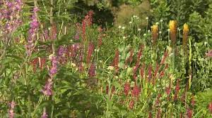

Guangzhou, China


Geographical Location: Asia
Guangzhou is the capital and largest city of Guangdong province in southern China. Located on the Pearl River about 120 km (75 mi) north-northwest of Hong Kong and 145 km (90 mi) north of Macau, Guangzhou has a history of over 2,200 years and was a major terminus of the maritime Silk Roa it continues to serve as a major port and transportation hub as well as being one of China's three largest cities.
Guangzhou is celebrated for its many handicraft products, including ivory carvings, jade objects, embroideries, fans, porcelain, and paper umbrellas. These, along with the citys famous cuisine and its many museums and other cultural attractions, have made Guangzhou one of China's principal tourist destinations.
Photo Gallery


Ha Long Bay, Vietnam


Geographical Location: Asia
Ha Long Bay is a UNESCO world heritage site and a popular tourist destination in northeast Vietnam. The bay is famous for its crystal clear emerald colored waters dotted with limestone mountains that rise up from the water. Many tourists visit and take boat tours around the islands that tend to me named after their peculiar shape. For instance, tourists can take kayak expeditions around the Teapot islets, a set of islands shaped like teapots, or be rowed around Stone Dog, which appears to be shaped like a dog.
The Ha Long Bay region is popular for scuba diving, rock climbing and hiking, particularly in mountainous Cát Bà National Park. The nearest city is Hai Phong, which is approximately 75 km away. It is easier to reach Ha Long Bay by boat because the journey from Hai Phong to Ha Long Bay can take nearly 2.5 hours.
Photo Gallery


Yellowstone


Geographical Location: North America
Yellowstone is the first national park in the United States. It covers over 2.2 million acres, and provides an opportunity to see wildlife and explore geothermal areas. In fact, Yellowstone contains about half the world's active geysers.
These unique opportunities also bring out a lot of bad decisions among the tourists. Every year visitors injure themselves or the wildlife by getting close to the animals. You can see examples of people making bad decisions by visiting Yellowstone National Park: Invasion of the Idiots, Tourons of Yellowstone, or Cowboy State Daily.
Photo Gallery


Monet's Garden

Geographical Location: Europe
In the village of Giverny, France, Monet's garden is a sanctuary that inspired the paintings of Claude Monet. Monet's garden helped him determine the subjects of his paintings, as he drew inspiration from the pond and surrounding flowers in his impressionist works. Common nature-related themes from Monet's garden became a recurring motif throughout all of his works.
The garden is divided into the Clos Normand flower garden and the Japanese water garden. The Clos Normand consists of flowers arranged in a formal manner, while the Japanese water garden consists of lilies and a water bridge that inspired a lot of Monet's water related works.
Photo Gallery